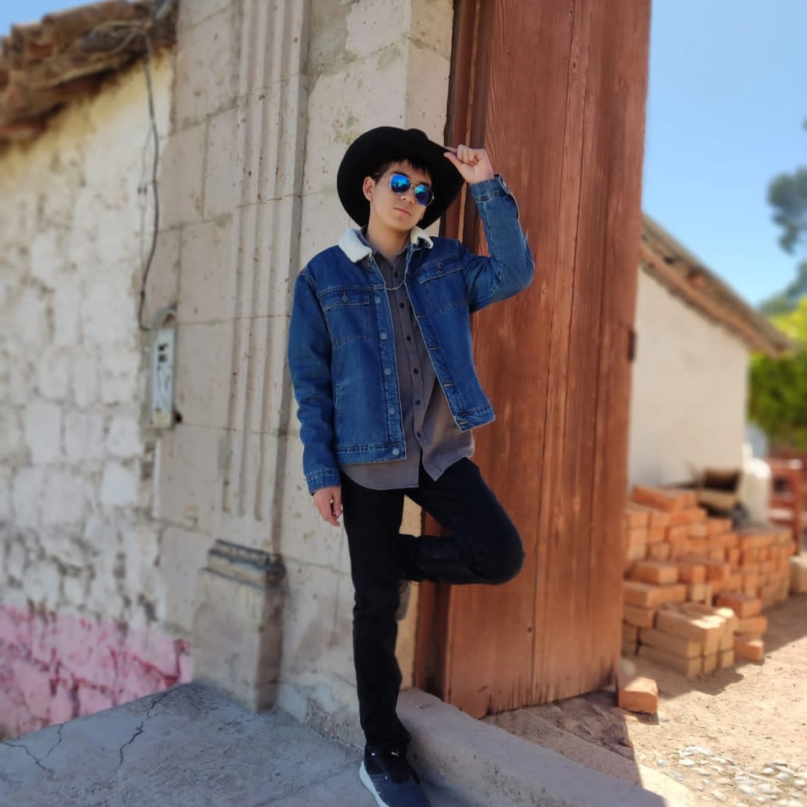

Estudiante de Inteligencia Artificial
Hola, soy Santiago Enrique Begazo Portillo. Tengo 21 años. Actualmente estudio Inteligencia Artificial en la Universidad Católica San Pablo.Antes estudiaba ingenieria mecatronica. Desde que tengo memoria me gusta el ajedrez, los videojuegos y el tiro deportivo(tiro con carabina/rifle). Me interesa poder desarrollar y mejorar mis habilidades de programación. Tengo un emprendimiento de impresión 3D. Me considero empatico, responsable,tranquilo,perseverante y ambicioso
Email universitario: santiago.begazo@ucsp.edu.pe
GitHub: Ver perfil
LinkedIn: Ver perfil
Instagram: Ver perfil